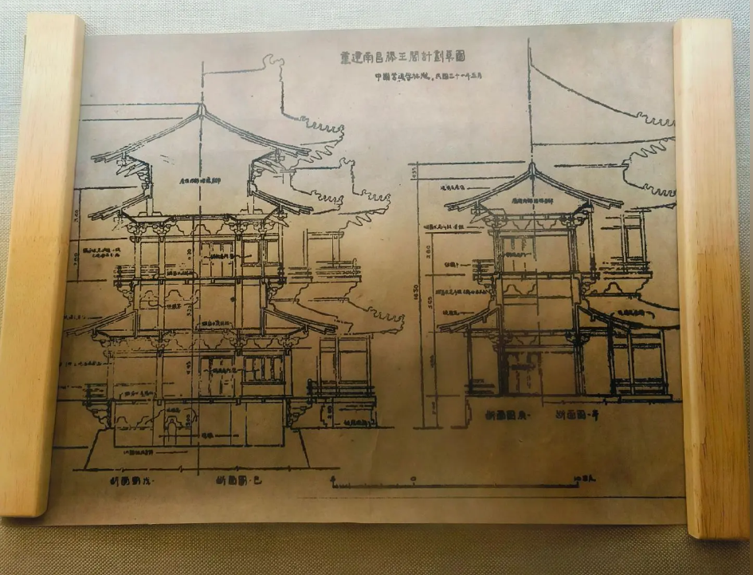

明三暗七 · 榫卯相契 · 千年营造

滕王阁外观三层、内部七层，是典型的"明三暗七"仿宋建筑格局。外观飞檐翘角、碧瓦重檐，内部回廊环绕、层层叠叠，体现了中国古代楼阁建筑的精妙结构。
斗拱是中国古建筑的灵魂构件，层层叠出如花朵绽放。滕王阁的藻井以龙凤纹饰为主题，彩绘金箔，在藻井中心悬挂铜镜，光线折射间如梦似幻。
整座楼阁采用传统榫卯结构，不用一颗铁钉。木材经过防腐处理，构件之间凹凸咬合，历经风雨而稳固如初，展现了中华营造技艺的卓越智慧。
← 左右滑动，穿越千年 →
明三暗七，层层皆有洞天 · 点击展开详情
主阁五层与第三层相似，也是一个回廊四绕的明层，是欣赏外景最好的地方。中厅正中屏壁上镶嵌着用黄铜板制作的《滕王阁序》铜碑，面积近10平方米，乃苏东坡手书，经复印放大，由工匠手工镌刻而成。西厅东壁上有一幅磨漆画《百蝶百花图》，为纪念滕王阁建造者李元婴而绘制——李元婴善画蝶，所画蝴蝶千姿百态，被称作"滕派蝶画"鼻祖。
该层取名"地灵厅"，主要体现"地灵"的主题。正厅墙壁上有一幅丙烯壁画《地灵图》，集中反映了江西名山大川自然景观的精华——从南往北依次是大庾岭梅关、弋阳圭峰、上饶三清山、鹰潭龙虎山、井冈山、庐山、鄱阳湖、石钟山等。画面严谨，功力深厚，充分表现了江西"钟灵毓秀"的壮丽山川。西厅为历代滕王阁建筑景观全息数字复原展示。
丙烯壁画《临川梦》取材于汤显祖在滕王阁排演《牡丹亭》的故事。画面以灰蓝色为基调，采用装饰手法刻画戏剧人物，体现神灵感梦的故事情节，表达了汤公对现实黑暗的抨击和对理想社会的憧憬。西大厅为古宴厅，墙上的铜浮雕《唐伎乐图》中，三位唐代舞伎正在表演霓裳羽衣舞。
二层为"人杰厅"，陈列有历代与滕王阁相关的文人墨客画像与事迹介绍。厅内设有"华夏圣旨博物馆"分展区，珍藏了数十道明清两代的圣旨，以及越南圣旨、日本国圣旨等珍贵文物。此外还有古代科举制度展厅，陈列了秀才、举人的试题、试卷、朱卷，以及清代考生作弊使用的丝织夹带等，生动展现了古代科举文化的方方面面。
一层正厅设有汉白玉浮雕《时来风送滕王阁》，取材自明代冯梦龙《醒世恒言》中《马当神风送滕王阁》的故事，再现了当年王勃写序的传说。西厅设置模拟实景和仿真硅胶人物，生动再现"阎公重九宴宾·王勃作序"的场景。此外，南北两侧长廊分别设有《滕王阁诗词集锦》碑廊（99方历代诗词碑刻）和《滕王阁序印谱》碑廊（158枚印章组合而成），以及"压江""挹翠"两座四角重檐亭。